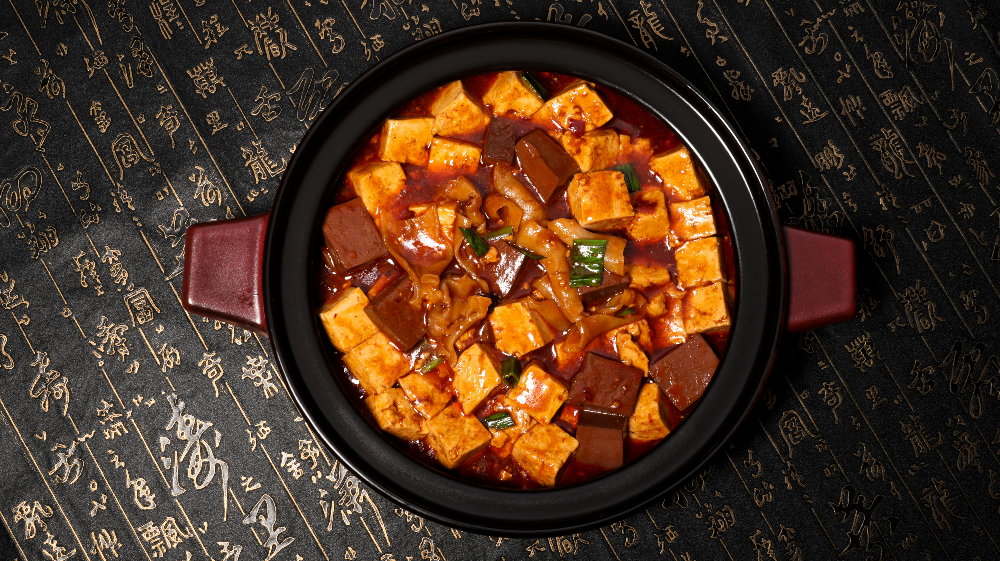

Mapo Tofu is a popular Chinese dish originating from the Sichuan region.
It is seasoned with the signature spice - the Sichuan Peppercorn. This gives the dish a prominent spicy, almost numbing effect.
The dish features Tofu -of course- and is served spicy and red sauce coming from the peppercorns.
Generally it is served with either pork or ground beef.
The flavor profile is umami, salty and hot, very hot.
Prep the Tofu: Press and drain the tofu. Then cut it into small cubes.
Toast & Grind Peppercorns: Toast peppercorns until fragrant, then grind them into a powder.
Heat 1-2 tbsp of oil in a wok or large skillet over high heat.
Add the ground meat and stir-fry, until it is golden and crispy.
Lower the heat to medium. Add the Doubanjiang and Douchi.
Stir for around 30-60 seconds until the oil turns a vibrant red.
Add the minced ginger, garlic, and the white parts of the scallions. Stir until fragrant.
Simmer
Pour the chicken stock or water and soy sauce in. Bring to a gentle boil.
Carefully slide the tofu cubes in. Push the tofu around gently, so it doesn't break.
Simmer for 3-5 minutes to allow the tofu to absorb the flavors.
Thicken and Finish
Pour the cornstarch paste into the pan in 2-3 stages, whilst stirring gently until it reaches your desired thickness.
Drizzle in the chili oil and add the green parts of the scallions.
Serve in a bowl and sprinkle Sichuan peppercorns on top.
Serve with a bowl of white rice to balance the intense heat and saltiness.